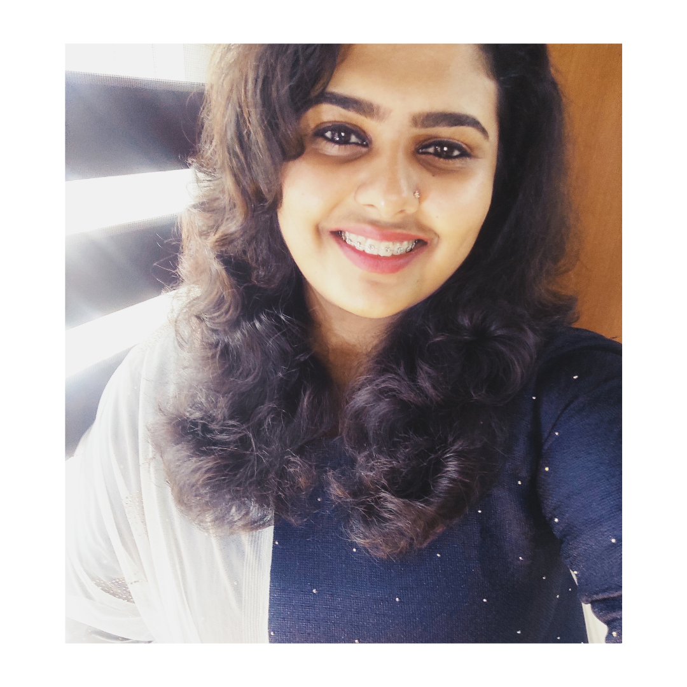

SISIRA SAJEEV
S4 EC, College of Engineering, Trivandrum

"Being stuck at home seemed like a good time to pick up some new knowledge and skills. Being a bio student in 12th std, I was very afraid of the programming world. But, I decided to learn programming during the quarantine period. But as time passed, I realised that it'll be better to have someone to motivate and give assistance. But watching my friends learning new skills and flaunting them on their profiles made me realise how much time I have wasted. After that, I made a strong decision to not give up or waste my time doing anything. It was that time I came across this wonderful opportunity provided by TinkerHub. With the assistance and encouragement from the mentors and peers, I strongly believe that I can develop new skills even being a beginner."
Being a biology student till twelfth and an undergraduate in Civil Engineering, this is something unfamiliar for me. This is going to be a whole new world. As a beginner, I believe She Hacks would help me carve a new skill with the support of mentors and peers. I hope it will be a great opportunity for me to come out of my comfort zone and grow. I am intensively enthusiastic to understand and learn them. I believe that She Hacks will definitely provide a great platform for me. It definitely abets me to enhance my creative and innovative thinking.